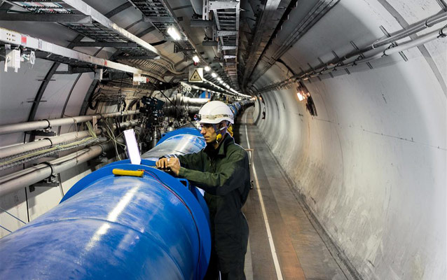

The JKJ group
Operations.
Specialist enterprises. A shared perspective on complex systems.
Structure
One holding company.
Distinct areas of expertise.
JKJ Industries brings multiple subsidiaries under a single holding company. The portfolio spans research, design, systems engineering, software, integration, managerial oversight, marketing, and logistics.
Each enterprise maintains its own specialization. Common ownership brings these different disciplines into a broader view of technology and operations.

Operating disciplines
From research to operation.
- Research & Design
- Manufacturing
- Logistics / Software Development
- Physical Services
Sectors
A multidisciplinary portfolio.
- Medical
- Aerospace
- Security
- Retail
- Energy
- Communications
- Military / Defense
- Financial Services
- Software
- Marketing
- Entertainment
- Printing
- Distribution
- Manufacturing